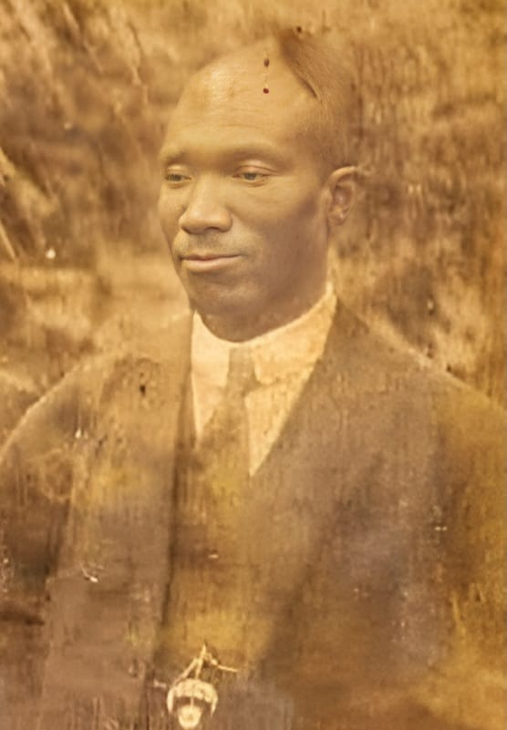
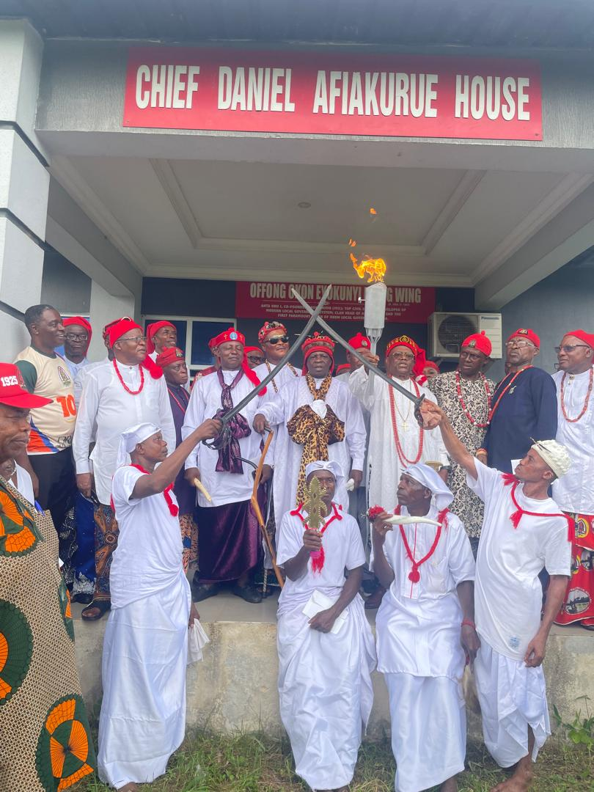
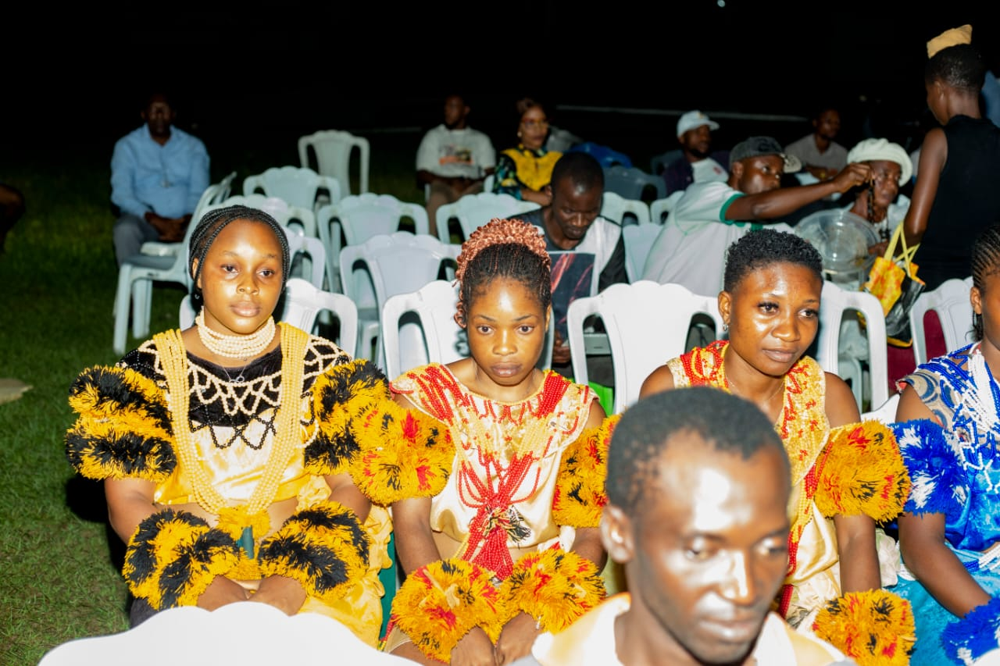
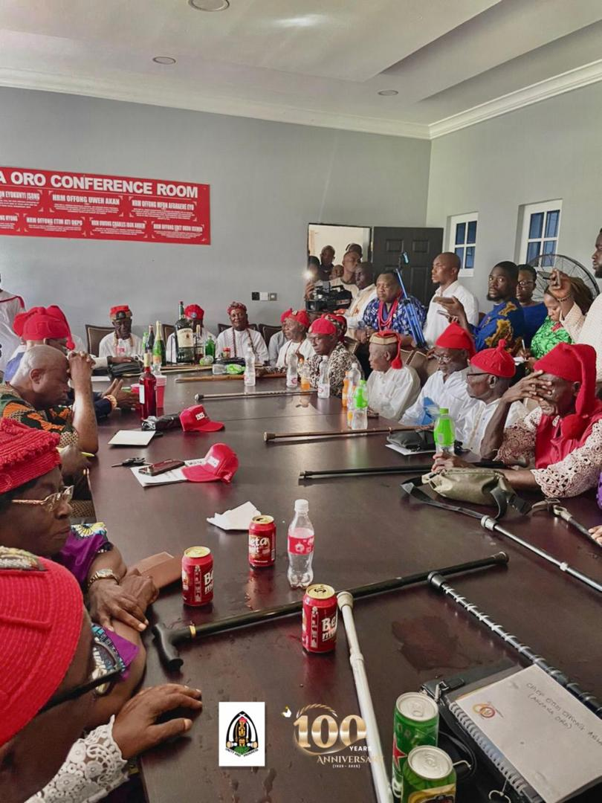

Uniting the Oro people across the world — preserving our heritage, empowering our communities, and building a brighter future together.
Centenary Cultural Night
July 2026 · Oron, Akwa Ibom
Your gateway to community, culture, and progress
Founded on May 23, 1925 by 88 Oro patriots led by Chief Ekpu Edubio Odoro, Chief John Anwana Esin, and Chief Okon Eyokunyi Isong. The Oron Union is one of Nigeria's first organised ethnic unions — committed to fostering unity, preserving our rich cultural heritage, and driving sustainable development.
Now celebrating 100 years of service, sacrifice, and solidarity, the Union continues to bring together Oro sons and daughters across Nigeria and the diaspora for the advancement of our communities.

A proud people with a rich and vibrant history

Discover the artistic traditions that define Oro's identity — from wood carvings to weaving, a heritage passed through generations.

Experience the vibrant celebrations that bring our communities together in joy and unity — from torch-lit rituals to royal durbars.

See how we're keeping our traditional values alive — from colourful ceremonial dress to the oral histories that shape Oro's identity.
April 25, 2026
April 20, 2026
April 15, 2026
Join us for these important community gatherings
An evening of music, dance, and performances celebrating 100 years of Oron Union's rich cultural heritage.

Members come together for a day of grassroots development, health drives, and youth mentorship across Oro communities.

Bringing together Oro leaders, elders, and stakeholders to chart the course for the next century of progress and unity.
Building infrastructure and empowering communities
Sponsoring scholarships and building schools for the next generation of Oro sons and daughters. Supporting over 200 students annually.
72% of 2026 target reached
Road construction, community halls, and public facilities to modernise Oron communities while honouring traditional values.
55% of 2026 target reached
Free medical outreaches, health sensitisation campaigns, and support for healthcare facilities serving Oron communities.
88% of 2026 target reached
Skills acquisition, entrepreneurship training, and mentorship programs equipping young Oro people with tools for the future.
63% of 2026 target reached
Whether at home or in the diaspora, your membership strengthens our union and empowers our communities. Complete the biodata form, get endorsed by a Union official, and receive your unique Member ID.